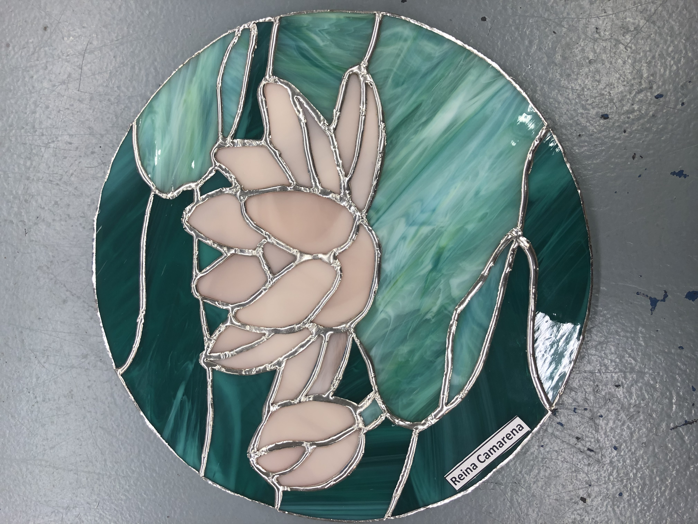
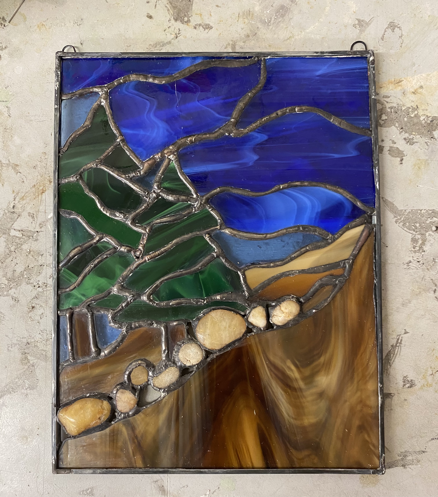

About

About Desert Rose Glass
Welcome to Desert Rose Glass! I'm Reina, and I'm getting back into stained glass after trying it in high school. This is where I share what I'm learning, from cutting and soldering to tools and beginner tips. The “& More” is where I hope this goes. Down the road, I'd like to sell vintage-inspired stained glass pieces along with other vintage finds I love.
Why I chose stained glass
After falling in love with stained glass in high school, I slowly but surely have started to build my own workstation at home. What drew me in was watching a bunch of separate pieces of glass come together into an art piece that tells a story. I'm especially drawn to vintage styles, like old floral panels, Art Nouveau shapes, and antique lamps, and that's the direction I want my own pieces to go.
"Many pieces of glass, one story."
My projects

Water Lily 
PNW Landscape 
Floral Hand 
Project name
A brief history of stained glass
-
600s-1200s
Early beginnings
Colored glass appears in churches and monasteries, and the oldest intact windows date to the 1000s.
-
1100s-1500s
Cathedral glass
Gothic cathedrals fill their walls with glass that glows and tells stories in color.
-
1880s-1930s
Tiffany era
Opalescent glass and the copper foil method bring new colors and delicate lamps.
-
1960s-Today
Modern makers
Stained glass becomes a hobby anyone can try at home, with modern tools and techniques making it more accessible than ever.
Ready to make your own?
See the process